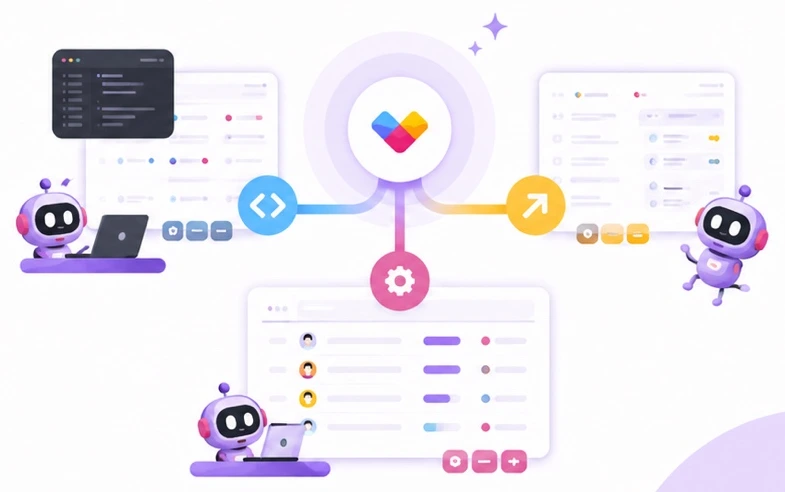
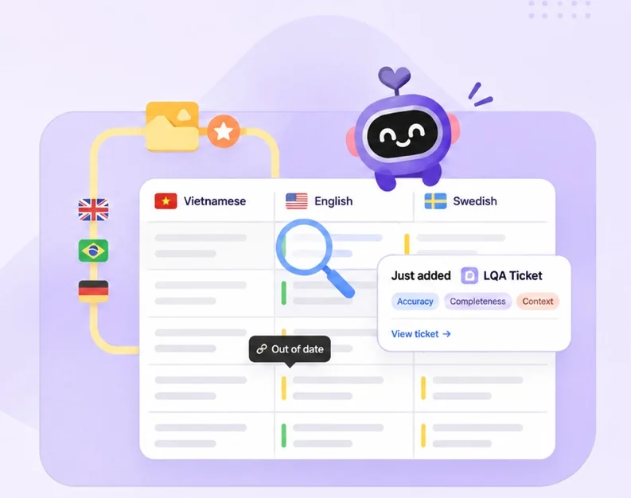
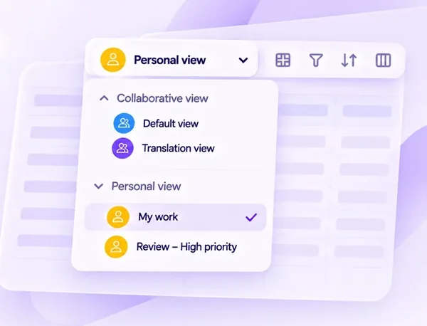
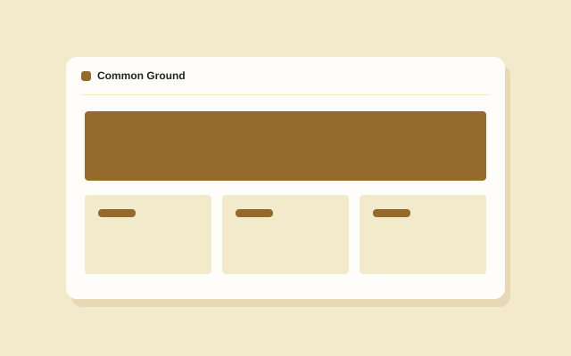
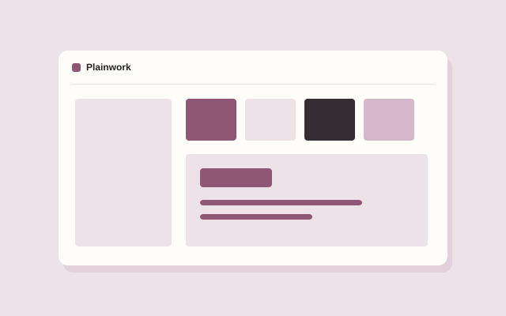

02How I think
Listen, observe and question assumptions before jumping into solutions.
Use flows and prototypes to turn a complex problem into something we can explore.
Test, learn from feedback and work with the team to make the experience better.
A little about me
Phu Vo Hoang Product Designer
I’m Phu. I like getting to the bottom of what people need and designing products that make everyday tasks easier.




A responsive concept for discovering and booking neighborhood events.

A design system concept for keeping a growing product consistent.
Listen, observe and question assumptions before jumping into solutions.
Use flows and prototypes to turn a complex problem into something we can explore.
Test, learn from feedback and work with the team to make the experience better.
Product Design Lead
UI/UX Leader
Product Designer
SEEC Vietnam · Advance Vision Technology
*Career details reflect the supplied CV.
Have a product challenge in mind? I'd love to hear about it.